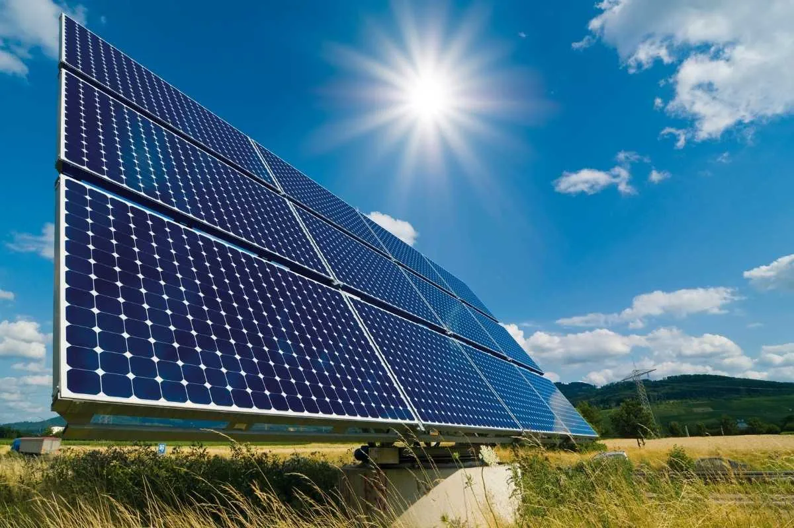

في ظل تصاعد وتيرة التحديات المناخية، وتهديدها للوضع البيئي العالمي، وتأثيرها على جدوى خطط التنمية في المجتمعات، وضعت الدولة المصرية خارطة طريق تمضي من خلالها في مسارات متوازية للتعامل مع تلك التحديات، خاصة فيما يتعلق بالتوسع في مشروعات الاقتصاد الأخضر وتنمية وتنويع مصادر الطاقة المتجددة وتعظيم قيمتها، باعتبارها أحد الملاذات الآمنة لتقويض مسببات التغير المناخي وتخفيف العبء الاقتصادي المترتب على استخدامات مصادر الطاقة التقيلدية، بالإضافة إلى التوسع في الشراكات مع القطاع الخاص والشركاء الدوليين في مجالات الطاقة النظيفة والمتجددة، والعمل على توفير التكنولوجيا اللازمة في هذا المجال، مما يؤهلها لأن تصبح واحدة من أكبر منتجي الطاقة النظيفة، وذلك في وقت تتطلع فيه مصر إلى توحيد جهود دول العالم في قمة المناخ (COP 27) بمدينة شرم الشيخ من أجل صياغة رؤية مشتركة لمجابهة التغيرات المناخية وتأثيراتها السلبية.
وفي هذا الصدد نشر المركز الإعلامي لمجلس الوزراء تقريراً تضمن إنفوجرافات تسلط الضوء على خطط مصر لتعزيز جهود التصدي للتغير المناخي وتحقيق استدامة الطاقة، في ظل استضافة مصر للقمة الدولية للمناخ COP 27.
وركز التقرير على جهود مصر للتوسع في الاعتماد على الطاقة المتجددة، موضحاً أن استراتيجية الطاقة المستدامة لعام 2035 تهدف الى زيادة مساهمة نسبة الطاقة المتجددة في مزيج الطاقة الكهربائية، حيث من المقرر أن يصل إنتاج الكهرباء من الطاقة المتجددة إلى 42% من إجمالي الطاقة الكهربائية المنتجة عام 2035، مقارنة بـ 20% عام 2022.
واستعرض التقرير مصادر إنتاج الكهرباء من الطاقة المتجددة (الحالية والمستهدفة)، لتشمل الطاقة الشمسية بنسبة 2% عام 2022، في حين يستهدف وصولها إلى 26% عام 2035، وطاقة الرياح بنسبة 12% عام 2022، بينما من المستهدف بلوغها 14% عام 2035، أما الطاقة المائية فمن المقرر أن تبلغ 2% عام 2035، مقابل 6% عام 2022.
وذكر التقرير أن الطاقة المولدة من مصادر الطاقة المتجددة (شمسي –رياح) زادت نحو 7 أضعاف منذ عام 2014/2015 (ألف ج.و.س)، حيث بلغت 10.4 عام 2021/2022، مقابل 10.2 عام 2020/2021، و8.7 عام 2019/2020، و4.5 عام 2018/2019، و2.9 عام 2017/2018، و2.8 عام 2016/2017، و2.2 عام 2015/2016، و1.4 عام 2014/2015.
وأوضح التقرير أن إجمالي القدرات المركبة من الطاقة المتجددة (شمسي – مائي – رياح ) بلغ نحو 7000 ميجاوات، ففيما يتعلق بمشروعات طاقة الرياح تبلغ طاقة المشروعات المنفذة 1635 ميجاوات، حيث أنتج جبل الزيت 580 ميجاوات، والزعفرانة 545 ميجاوات، ورأس غارب 260 ميجاوات، وغرب بكر 250 ميجاوات، بجانب مشروعات تحت التنفيذ بخليج السويس بطاقة 250 ميجاوات، فضلاً عن مشروعات تحت التطوير بخليج السويس قطاع خاص بقدرة 2800 ميجاوات.
وتتضمن مشروعات الطاقة المتجددة أيضاً، مشروعات الطاقة الشمسية حيث بلغت طاقة المشروعات المنفذة 1756 ميجاوات، ومن أبرزهم مشروعات خلايا فوتو فلطية بنبان 1465 ميجاوات، والكريمات شمس حراري 140 ميجاوات، و خلايا فوتو فلطية فوق أسطح المنازل 121 ميجاوات.
وبالإضافة إلى ذلك، لفت التقرير إلى وجود مشروعات خلايا فوتو فلطية تحت الدراسة تصل طاقتها إلى 770 م.و منها 700 قطاع خاص، بينما تشمل مشروعات الطاقة المتجددة كذلك، مشروعات الطاقة الكهرومائية بنجع حمادي بطاقة 64 ميجاوات، وأسيوط بطاقة 32 ميجاوات.
ورصد التقرير أبرز الاتفاقيات ومذكرات التفاهم في مشروعات الطاقة الجديدة والمتجددة، مبيناً أن مصر بيئة جاذبة للاستثمار في هذا المجال، حيث من المستهدف إجراء شركة أكواباور السعودية القياسات الخاصة بمشروع طاقة الرياح الذي ترغب الشركة في تنفيذه في مصر، بقدرة 10 جيجاوات، كما تقوم مجموعة النويس الإمارتية بشراء الطاقة من مشروع محطة طاقة شمسية بمنطقة كوم أمبو بأسوان بقدرة 500 م.وات، علاوة على شراء الشركة ذاتها الطاقة من محطة طاقة الرياح بمنطقة خليج السويس بقدرة 500 م.وات.
يأتي هذا فيما تشمل الاتفاقيات ومذكرات التفاهم أيضاً، شراء شركة ليكيلا الإنجليزية الطاقة من مزرعة الرياح بمنطقة خليج السويس بقدرة 250 م.وات، وكذلك تقديم البنك الأوروبي لإعادة الإعمار والتنمية نحو 1.3 مليار دولار لتعزيز عمليات التحول الأخضر والتخلص من محطات الطاقة القديمة والمساهمة في مشروع جديد لطاقة الرياح والطاقة الشمسية، بجانب ضخ 114 مليون دولار من قبل شركة أكواباور السعودية والبنك الأوروبي لإعادة الإعمار والتنمية بالمشاركة مع جهات التمويل الدولية لتطوير محطة كوم أمبو للطاقة الشمسية، والتى ستضيف طاقة توليد 200 ميجاوات.
وأشار التقرير إلى أنه تم توقيع 16 مذكرة تفاهم لمشروعات داخل المنطقة الصناعية في العين السخنة ومنطقة شرق بورسعيد، بهدف إقامة منشآت ومجمعات صناعية لإنتاج الوقود الأخضر واستخدامه في أغراض تموين السفن أو التصدير للأسواق الخارجية، باستثمارات متوقعة أكثر من 20 مليار دولار.
وأوضح التقرير أن من بين مذكرات التفاهم أيضاً، مذكرة تفاهم مع شركة سكاتك النرويجية والتي تستهدف إنتاج من مليون إلى 3 مليون طن سنويًّا من الأمونيا الخضراء، فضلاً عن استهداف إنتاج مجموعة ACME الهندية لـ 2.2 مليون طن سنوياً وقود أخضر، كما أنه من المستهدف إنتاج شركة FFI “Fortescue Future Industries” الأسترالية لأكثر من 2 مليون طن من الأمونيا الخضراء سنويًّا.
ومن جانبها تستهدف شركة "جلوبال إك" البريطانية إنتاج نحو 2 مليون طن سنوياً من الهيدروجين الأخضر، بالإضافة إلى استهداف شركة الفنار السعودية إنتاج 500 ألف طن سنوياً من الوقود الأخضر، فضلاً عن إنشاء شركة H2 Industries الألمانية (منطقة شرق بورسعيد الصناعية) أول محطة تحويل المخلفات إلى هيدروجين أخضر بطاقة إنتاجية 300 ألف طن سنويًا.
ولفت التقرير إلى أنه جاري إعداد الاستراتيجية الوطنية للهيدروجين الأخضر، وأن مصر ستعلن عنها في فعاليات مؤتمر COP 27، حيث أنها تستهدف استفادة مصر من القدرات التنافسية لها للوصول إلى 8% من السوق العالمية للهيدروجين، مشيراً إلى أن مصر لديها القدرة على إنتاج الهيدروجين الأخضر بأقل تكلفة في العالم، ومن المقرر أن تنخفض تكلفة الإنتاج لتصل إلى 1.7 دولار/كجم عام 2050 مقارنة بـ2.7 دولار/كجم عام 2025.
وبشأن العوائد المستهدفة من الاستراتيجية فتشمل وفقاً للتقرير، زيادة في الناتج المحلي الإجمالي من 10- 18 مليار دولار بحلول عام 2025، فضلاً عن أنه سيتيح أكثر من 100 ألف وظيفة جديدة، بجانب المساهمة في تخفيض واردات مصر من المواد البترولية، وكذلك تقليل انبعاثات الكربون.
وألمح التقرير إلى أن الاستراتيجية يتم تنفيذها بالتعاون مع البنك الأوروبي لإعادة الإعمار والتنمية EBRD، والاتحاد العربي للتنمية المستدامة والبيئة.
يأتي هذا بينما استعرض التقرير مشروعات الربط الكهربائي مع دول الجوار والتي تساهم في سد احتياجاتها من الطاقة، موضحاً أن القارتين الأفريقية والأوروبية ضمن أقل القارات ومناطق العالم إنتاجاً للكهرباء حول العالم لعام 2021، وذلك بعد أن بلغت نسبة الطاقة الكهربائية المولدة في إفريقيا 3.2% من إجمالي إنتاج العالم، أما إنتاج أوروبا فقد بلغت نسبته 14.2% من إجمالي إنتاج العالم.
وفي ذات السياق، بلغت نسبة إنتاج أسيا والمحيط الهادي من الطاقة الكهربائية 49.2% من إجمالي إنتاج العالم، علماً بأن المتبقي من إنتاج العالم قد بلغ 33.4%.
وأضاف التقرير أن قارة أوربا هى الأكثر استيراداً للكهرباء عام 2019 وفقاً لأحدث بيانات متاحة، حيث بلغت نسبة واردات الكهرباء لكل من أفريقيا 4.4% من إجمالي واردات العالم، وآسيا أوقيانوسيا 10.9% من إجمالي واردات العالم، وأوروبا 62.8% من إجمالي واردات العالم الذي بلغ إجمالي المتبقي من وارداته 21.9%.
وفيما يتعلق بالربط الكهربائي مع دول أفريقيا، فتصل القدرة المستهدفة لخط الربط الكهربائي بين مصر والسودان 300 ميجاوات، إلى جانب بلوغ القدرة المستهدفة لخط الربط الكهربائي بين مصر وليبيا 2000 ميجاوات.
وفيما يخص الربط الكهربائي مع دول آسيا، فتصل القدرة المستهدفة لخط الربط بين مصر والسعودية 3 آلاف ميجاوات، في حين تبلغ القدرة المستهدفة لخط الربط الكهربائي بين مصر والأردن 2000 ميجاوات.
وبالنسبة لخط الربط الكهربائي مع دول أوروبا، فوفقاً للتقرير تبلغ القدرة المستهدفة للربط بين مصر وقبرص واليونان 3000 ميجا وات.
وتناول التقرير الحديث عن الرؤية الدولية لجهود مصر في تنمية مصادرها من الطاقة المتجددة، مشيراً إلى بريتش بتروليوم صنفت مصر الأولى عربياً في توليد الطاقة المتجددة عام 2021 بقدرة 10.5 ألف ج.و.س فيما تصل قدرة المغرب 6.9 ألف ج.و.س، والإمارات 5.2 ألف ج.و.س، والسعودية 0.8 ألف ج.و.س ، والجزائر 0.7 ألف ج.و.س، وكل من العراق وعمان 0.4 ألف ج.و.س وكل من الكويت وقطر 0.1 ألف ج.و.س.
وأظهر التقرير أن فيتش تتوقع نموًا قويًا بقطاعات الطاقة المتجددة مقارنة بعام 2021، حيث توقعت أن يبلغ معدل نمو توليد الكهرباء من مصادر الطاقة المتجددة (بخلاف الطاقة الكهرومائية) 13.9% عام 2021، مقابل 22.6% عام 2022، و23% عام 2023.
كما توقعت فيتش، أن مصر ستكون واحدة من أسرع أسواق الطاقة المتجددة غير الكهرومائية نموًا بالمنطقة على مدار العشر سنوات المقبلة، بالإضافة إلى توقعها أن تعزز مصر من قدرتها التنافسية وأن تصبح وجهة جاذبة للغاية للمستثمرين بمصادر الطاقة المتجددة، بفضل دعم الدولة المصرية القوي وإمكانات الطاقة الشمسية وطاقة الرياح الطبيعية.
وورد في التقرير أن مصر في صدارة الدول العربية في القدرة الإنتاجية للطاقة الشمسية وطاقة الرياح، بقدرة 3523 ميجاوات، فيما بلغ إنتاج الإمارات 2600 ميجاوات، والمغرب 1867 ميجاوات، والأردن 1669 ميجاوات، والسعودية 776 ميجاوات، والجزائر 444 ميجاوات، وتونس 253 ميجاوات، وعمان 180 ميجاوات، وموريتانيا 95 ميجاوات، والكويت 30 ميجاوات، وقطر 15 ميجاوات، والصومال 10 ميجاوات.
وتناول التقرير الحديث عن تحقيق مصر تقدماً ملحوظاً في المؤشرات الدولية للطاقة المتجددة، حيث تقدمت مصر 5 مراكز في مؤشر تغير المناخ CCPI محتلة المركز 21 عام 2022، مقابل المركز 26 عام 2014، فضلاً عن تقدمها 13 مركزاً في مؤشر الدول الأكثر جاذبية في قطاع الطاقة المتجددة حيث شغلت المركز 26 في مايو 2022، مقارنة بالمركز 39 في مارس 2015.
يأتي هذا فيما تقدمت مصر 5 مراكز في مؤشر التحول الفعال بمجال الطاقة، حيث شغلت المركز 76 عام 2021، مقارنة بالمركز 81 عام 2018، كما تقدمت 35 مركزاً في مؤشر الاستدامة البيئية حيث احتلت المركز 42 عام 2021، مقابل المركز 77 عام 2015.
واشار التقرير إلى أن مصر ضمن 5 دول فقط بالشرق الأوسط وشمال أفريقيا تستحوذ على ثلاثة أرباع من مقدار التوسع في الطاقة الاستيعابية لمصادر الطاقة المتجددة التي من المتوقع أن تتضاعف خلال الخمس سنوات 
المقبلة "حسب الوكالة الدولية للطاقة".
كما أصبحت مصر الثالثة عربيًا والأولى بشمال أفريقيًا في معدل النمو المتوقع للطاقة الاستيعابية لمصادر الطاقة المتجددة في السنوات الخمس القادمة "حسب الوكالة الدولية للطاقة"، والتي توقعت أن تنمو الطاقة الاستيعابية للطاقة المتجددة في مصر بنسبة 68%.
هذا وقد رصد التقرير الرؤية الدولية لجهود مصر في تنمية مصادرها من الطاقة المتجددة، حيث أكدت الوكالة الدولية للطاقة أن مصر أدركت الفرص التي يوفرها الاعتماد على مصادر الطاقة المتجددة باستراتيجيتها المتكاملة للطاقة المستدامة 2035، والتي تسعى من خلالها لضمان أمن الطاقة واستقرارها واستدامتها، كما تعكس مشروعاتها للطاقة المتجددة عزمها على تحويل تلك الرؤية إلى حقيقة واقعة.
وذكرت الوكالة أيضاً أن مصر حققت تقدمًا ملحوظًا في تطوير سياسات وأطر تنظيمية فعالة لتمكين وتوظيف مصادر الطاقة المتجددة، فضلاً عن اكتساب الخبرة في تنفيذ مجموعة كبيرة من المشروعات خاصةً المتعلقة بتوليد الكهرباء من الطاقة الشمسية والرياح.
وبدوره أشاد البنك الدولي باتخاذ مصر خطوات لتسريع الانتقال إلى نموذج تنموي شامل ومراع للبيئة وأكثر استدامة وقدرة على الصمود، مشيراً إلى أنها عملية مشتركة لتحسين نوعية الحياة للمصريين، بما فى ذلك الفئات الأكثر احتياجاً بالمجتمع، بما يمكنها من الاستفادة من مشروعات التنمية، وفى الوقت نفسه التمتع بحياة صحية منتجة.
ومن جانبه لفت معهد التمويل الدولي إلى أن مصر تحدد مجموعة من أهداف التخفيف من غازات الاحتباس الحراري، مشيراً إلى أنه رغم كونها أكبر منتج وأكبر مستهلك للنفط والغاز بالقارة الأفريقية من خارج أوبك، إلا أنها تهتم اهتمامًا كبيرًا بالطاقة النظيفة كوسيلة لتأمين وتنويع قاعدة طاقتها مع استخدام مواردها الطبيعية الضخمة.
كما اعتبر برنامج الأمم المتحدة للبيئة مصر دولة رائدة في الاقتصاد الأخضر لبرنامج الأمم المتحدة للبيئة، وأنها من البلدان التي تهدف للمشاركة بشكل استباقي وبناء في المضي قدمًا في ذلك المجال.
يأتي هذا فيما سلط التقرير الضوء على رؤية المؤسسات الدولية لنمو صادرات الكهرباء ومشروعات الربط الكهربائي، حيث أكدت فيتش أن صادرات الكهرباء ومشروعات الهيدروجين الأخضر ستدفع النمو طويل المدى لقطاع الطاقة المصري، كما سيظل فائض إمدادات الطاقة فى مصر مرتفعاً خلال السنوات العشر المقبلة، حيث تعطى الدولة المصرية الأولوية للاستثمار فى مشروعات الربط الكهربائى الجديدة بهدف أن تصبح مركزاً إقليمياً لإمدادات الكهرباء.
وأكدت المؤسسة ذاتها أن خطط الربط الكهربائى الحالية تعزز نظرتها لنمو صادرات الكهرباء المصرية وعلى رأسها مشروع الربط بين مصر واليونان وقبرص مما سيوفر مصدراً موثوقاً للكهرباء من مصر سيغذي الشبكة الأوروبية المترابطة عبر اليونان.
وإلى جانب ما سبق، أشارت الوكالة الدولية للطاقة إلى أن مشروع الربط الكهربائى بين مصر والسعودية سيسمح بتبادل ما يصل إلى 3 آلاف ميجاوات من الطاقة، حيث يعد المشروع هو الأول من نوعه بمنطقة الشرق الأوسط وشمال أفريقيا.
أما بلومبرج، فقد أوضحت أن مصر تمتلك مزايا كمنتج للطاقة المتجددة، وتحاول استغلالها بجانب ما لديها من فائض بالكهرباء لتصبح مركزاً إقليمياً لصادرات الكهرباء، معتبرة توقيع اليونان ومصر اتفاقاً للربط الكهربائي هو أول اتفاق من نوعه يتم بين أوروبا وأفريقيا بجنوب شرق المتوسط.
وأخيراً، أبرزت مجموعة أكسفورد للأعمال تخطيط مصر للحفاظ على فائض بقدرات توليد الطاقة مما يمكنها من زيادة صادراتها للبلدان المجاورة، حيث تم بالفعل إبرام عدة اتفاقات للربط مع السعودية والسودان وقبرص واليونان.